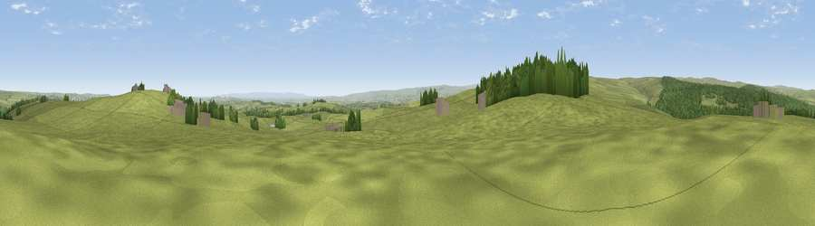

Viewpoint near Woodland
#14177 in England · top 31% of its area beats it · near WoodlandWhere it is
The exact computed spot (NZ 05875 26075). Click the marker for map links.
The view, rendered

A 360° render of this exact spot computed from the terrain model, tree cover and land cover — summer colours, afternoon light, calibrated against photographs of famous viewpoints. Real trees, hedges and buildings will differ in detail.
The panorama
Grey silhouette: terrain skyline in each direction (720 bearings, Earth curvature and refraction included). Dashed green: skyline with trees (+15 m) and buildings (+8 m) as obstacles. Blue strip: how far the ground is visible on each bearing.
Where the view opens
Wedge length = distance to the farthest visible ground on that bearing (vegetation-aware). Rings at 10, 25 and 50 km.
What fills the view
83% grassland · 14% woodland · 3% cropland · 1% built-up
Angular shares of the visible panorama (visual magnitude), not map area. Landscape diversity 0.25 (0–1 Shannon).
Key numbers
More beautiful places nearby
The staircase of upgrades: each row has a higher view potential than everything closer. Driving times are estimates from straight-line distance, calibrated against real road routing — check an actual route before setting out.
| Place | Direction | Drive | Score |
|---|---|---|---|
| Viewpoint near Woodland | SW · 1 km | ~3 min | 62.8 |
| Viewpoint near Eggleston | WSW · 4 km | ~8 min | 69.7 |
| Viewpoint near Eggleston | WSW · 5 km | ~11 min | 76.0 |
| Pontop Pike | NNE · 28 km | ~45 min | 77.8 |
| Little Dun Fell | W · 36 km | ~55 min | 78.4 |
| Cross Fell | WNW · 38 km | ~57 min | 78.7 |
| Viewpoint near Ingleby Cross | ESE · 48 km | ~69 min | 82.4 |
| Beacon Hill | ESE · 48 km | ~69 min | 84.7 |
54.62978, -1.91051 · source: screening · position refined by local search. Computed location — check access rights before visiting.